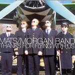

| Artist: | Mats/Morgan Band |
| Title: | Thanks For Flying With Us |
| Label: | Cuneiform Rune 215 |
| Length(s): | 74 minutes |
| Year(s) of release: | 2005 |
| Month of review: | [04/2006] |
| 1) | Sinus | 4.56 |
| 2) | Thanks For Flying With Us | 3.34 |
| 3) | Adat Dropout I Love You | 3.00 |
| 4) | Not Us | 2.34 |
| 5) | JF's Tati-car | 4.09 |
| 6) | La Baratte | 5.51 |
| 7) | Softma | 3.32 |
| 8) | Wounded Bird | 4.35 |
| 9) | Propeller Haest | 3.53 |
| 10) | Allan In The Rain | 4.03 |
| 11) | Wenjie | 3.12 |
| 12) | Please Remain Seated | 3.20 |
bonus
| 13) | Coco | 3.14 |
| 14) | Live Neff | 7.52 |
| 15) | Alive In Enskede | 8.02 |
| 16) | Ivan | 7.28 |
On the other hand, considerations to the point of label styles should not make the impression that Mats/Morgan are formulaic in their nusical approach: this album is yet another example of how weird (at least musically so) these guys are. This goes to the point where it's hard to describe the duo's music. There is ample use of electronics and keyboards, but Adat Dropouts I Love You is based on harmonica (or what sounds like it). This and the two tracks before it are tracks that do well in combining assorted experiments with melody. Not Us takes a shot at the armament of pilots in the US, before leading up towards a couple of tracks that shift focus towards the experimental, away from melody. I detect a whiff of Brand X here, just more electronic. These tracks are quite a bit more taxing. This style is also found in Proppeller Hast and Allan In The Rain. Please Remain Seated is more tranquil, but still quite weird, close to Robert Wyatt's more experimental solo works.
Softma and Wounded Bird are less fast, jumpy and full, but maintain the experimental approach. These tracks are very much led by electronics to such a point that the music sounds like that of a non-danceoriented version of early Daft Punk or maybe even Autechre.
From track 13 on we are on the bonus tracks, even though I have no idea whether there is a release of this album that lacks these tracks, bonus they are. Coco is shortish, heavy with the same vocoder sound as on Daft Punk's Discovery (Harder, Better, Fast, Stronger), and stylistically akin too. Live Neff returns to a sound heard more often in the past from Mats/Morgan: experimental jazz without much electronics, save some electric piano. A sound that is continued into Alive In Enskede and Ivan.